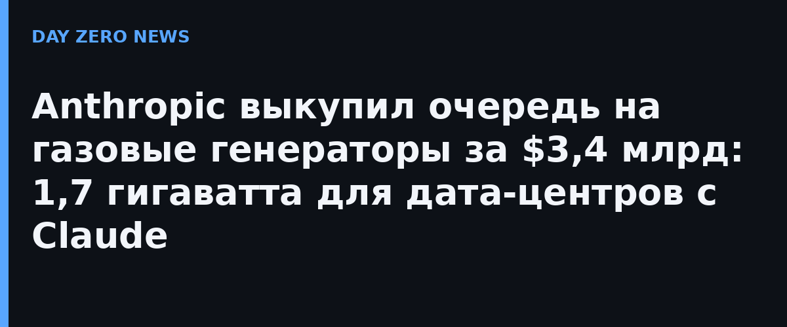

Anthropic договорился о поставке газовых генераторов для своих дата-центров примерно на $3,4 млрд, сообщил Financial Times 8 ноября (Reuters и TechCrunch подтвердили репортаж). Сделку заключили ещё в конце сентября: компания не стала ждать шесть лет своей очереди, а перекупила заказы у подрядчика OnePWR, который, по данным отраслевых изданий, два года назад разместил их у Caterpillar. В итоге Anthropic забронировал 1,7 ГВт мощности — этого хватило бы примерно на миллион обычных домов, если говорить языком бытовых розеток.
Дефицит электричества для обучающих и рассуждающих кластеров стал главным тормозом отрасли: подключение к сетям в США растягивается на годы, а строители дата-центров стоят в многолетних очередях за турбинами. Поэтому лабораториям приходится закупать генерацию напрямую и часто строить её «в полях», вдали от сетей. Anthropic идёт тем же путём, что OpenAI, xAI и Google, — только что выигравшая гонку за подписчиков модель Claude теперь догоняет конкурентов в гонке за киловатты и выкупает очередь деньгами.
Отдельного официального анонса у Anthropic нет: цифры и обстоятельства сделки известны из репортажа Financial Times, который перепечатали Reuters, Tom's Hardware, TechCrunch и Quartz. Сама компания сумму публично не подтверждала, так что $3,4 млрд и 1,7 ГВт стоит считать очень надёжно источёнными, но пока журналистскими данными.
ИИ-индустрия окончательно превращается в крупного энергопотребителя: миллиарды долларов уходят не только в чипы, но и в железо, которое жжёт газ ради стабильной частоты в сети. Для клиентов Claude это значит одно — модель никуда не денется из-за отключений света. Для всех остальных — что борьба за климат и борьба за ток в розетке теперь идут по одному счёту.